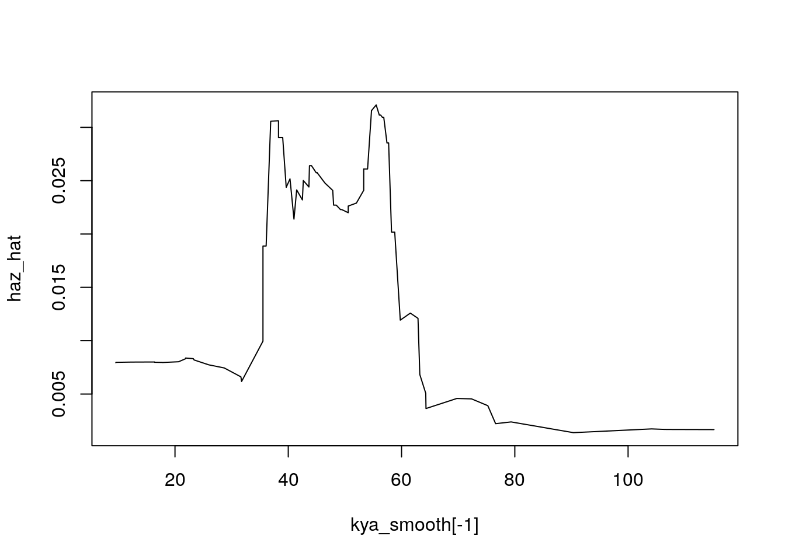

Chapter 10 Coalescent
10.1 Outline
- Big picture: What is “coalescent theory”?
- Time to (T)MRCA
- Simulation: Inferring population size
- An application of Coalescent Theory
10.2 Big picture: The Coalescent: Expectations of the Past
- Coalescent theory is not a theory.
- It’s a model for the probability of different histories
- “the” coalescent is a bit confusing. We’re not inferring the actual history of common ancestry, just the probabilities
An actual “picture”

- Top panel is a Fisher-Wright instance, ordered so that lines don’t cross.
- Haplotype is a sequence (we are diploids, each contributing 2 haplotypes). But let’s just think of each line as an individual, for now.
We can find The Most Recent Common Ancestor (TMRCA) of sample (dark purple). Who and when would the MRCA of the top two individuals be?
- Our sample \(\neq\) even all extant descendants of the MRCA. What does this mean?
- Our sample \(\neq\) all of the descendants of the MRCA. What does this mean?
- If we chose two descendants at random, would we always get same MRCA?
When we model coalescence we are thinking backwards in time.
10.3 Our first question: When was MRCA?
If we sample two individuals (today), how long ago was their MRCA?\ (Note: question is not “who”)
- Our answer will in terms of the probability of MRCA being 1 generation ago, 2 generations ago, etc.
- We’ll assume Fisher-Wright (constant N, each gen randomly picks parents)
- The answer is surprisingly simple
Let’s assume we have \(N\) lines in Fisher-Wright (Note: I’m not using \(2N\).)
- The chance that two sampled people have same parent is \(1/N\), right?
- Thus \(P(T_{MRCA} = 1) = 1/N\).
- What is $P(T_{MRCA} = 2) = $?
- What is $P(T_{MRCA} = n) = $?
Let’s go to continuous time (reasonable if pop is big and time scale is long).
Hazard of coalescence = \(c = 1/N\). Probability of coalescence at time \(t\) = \(\ell(t) h(t) = e^{-ct} c\)
What is expected time of coalescence? Think life expectancy.
\(E(T_{MRCA})\) if two samples: \(1/c = 1/(1/N) = N\)
Let’s simulate
- 1 time, without random seed, letting N = 40, ngen = 200, mu = 0
- Average over 100 FW simulations
- What is variance of outcome? Is it what we would expect from exponential?
10.4 Mutation and inference of TMRCA and \(N\)
- Say mutations occur at a constant rate \(\mu\) (\(10^{-8}\)?)
- Each year we would expect \(\mu\) mutations, and over \(T\) years we would expect \(T\mu\) mutations.
- Say we observe that two people differ at \(k\) sites of the
genome.
- When was TMRCA?
- How big is the population?
Picture (\(\Lambda\)) Tree length = \(2T\) Expected number of mutations: \[ E(k) = E(2T\mu) = \bar{T} 2 \mu \] Since, \[ \bar{T} = E(TMRCA) = N \] If we observe on average \(\bar{k}\) mutations, then \[ E(k) = N 2 \mu \rightarrow \hat{N} = {\bar{k} \over 2 \mu} \]
10.5 Inference of population size, simulation
- We do FW with mutations
- Average pairwise differences
- Divide by \(2\mu\) to get our estimate
- We can repeat a bunch of times and see average estimate converges to the truth
Coalescence of a sample of \(n\) individuals
- This is covered on pages 42 and 43 of Gillespie
- We’ll just do one quick example, accepting the result
A sample of 3: Note we’re using \(N\) (instead of \(2N\))
Question: If we sample 4, how much of time to TMRCA is do we have 4 branches, 3 branches, and 2 branches?
10.6 Conclusions
- We defined the coalescent as the stochastic process going back in time to common ancestors
- For constant population size, we proved that time to coalescence for a sample pair is exponential.
- We showed (math and simulation) that \(E(T) = N\).
- We showed that we could estimate \(N\) from observed mutations if we knew the mutation rate
\end{frame}
10.7 An application of coalescent theory
Application to making inferences about the real history of human populations.
Caveat: We’re still using \(N\) (not \(2N\)) as the number of haploids
10.7.1 Coalesence when population is changing
- Ee said hazard of coalescence was \(h = c = 1/N\).
What is hazard of coalesence in one generation for two different populations: \(N = 1000\)? \(N = 2000\)?
What if within the same population \(N(t) = 1000\) and \(N(t+1) = 2000\)? (Hint: we still follow FW in allowing children to choose their parents.)
If the population size changes over time \(N(t)\), then hazards of coalescence in will change too: \(h(t) = 1/N(t)\).
N_recent = 5000 ## population last T_thresh years
T_thresh = 1000
N_ancient = 500 ## earlier population
n = 1000 ## sampled individuals
set.seed(0.4886)
T1 <- rexp(n, rate = 1/N_recent) ## give everyone a chance to coalesce
T1[T1 > T_thresh] <- NA ## if they don't in 1st 1000 years, resample them
n2 <- sum(is.na(T1))
T2 <- T_thresh + rexp(n2, rate = 1/N_ancient) ## at ancient rate
T.vec <- c(T1, T2)
hist(T.vec, breaks = seq(0, 5000, 250)) Q: How could we estimate population sizes from this histogram?
Q: How could we estimate population sizes from this histogram?
T.vec <- sort(T.vec)
St = (n:1)/n
par(mfrow = c(1,2))
plot(T.vec, St); abline(v = T_thresh); plot(T.vec, log(St)); abline(v = T_thresh) Q: How can we estimate hazards from this histogram?
Q: How can we estimate hazards from this histogram?
Our approach
- Say we have \(i\) pairs of haploids
- We then compute how many pairwise differences there are, but instead of computing \(\bar{k}\), we keep the distributional information \(k_i\).
- Each \(k_i\) implies a \(T_i\)
- We then have a set of ``death times’’ (coalescence times), can build a life table, estimate the hazards, and infer \(N(t)\).
10.8 Inference from MRCA times: \(n > 2\) comparisons and relative branch lengths
Detour to length of branches A sample of 3: Note we’re using \(N\) (not \(2N\))Intuition: when we have more individuals, there’s more chance that some pair of them will coalesce.
Question: If we sample 4, how much of time to TMRCA do we have 4 branches, 3 branches, and 2 branches?
10.9 Reconstruction Ancient European Population Sizes using Batini’s sample of Mitochondrial DNA"
We use real sequences of mitochondrial DNA to estimate ancient population sizes. The sequences were made available by Batini et al, who analyzed sub-populations in their paper using software for Bayesian inference for comparing groups of individuals. Our approach here is to use a simpler, but less powerful approach. We will simply look at pairwise differences of random pairs of individuals. For this we are not going to do subgroups such as the Greeks or Irish, but are going to use the entire European sample. The population sizes we estimate are for the entire population represented by the 328 individuals.
Special thanks to Ken Wachter, who taught me this approach and whose R-code forms the basis of this application
10.9.1 Summary of Batini et al.
Before we begin our own analysis, let’s look at the inputs to Batini’s analysis – the mtDNA haplotype sequences, and then at the resulting population estimates.
10.9.1.1 The mitochondrial DNA
Data preparation begins.
There are 380 individuals grouped into regional sub-populations. I select out the Greeks, whose labels begin with “gre”.
## [1] 4 3 4 2 5 11 1 15 16577 16577 16577 16577 16577 16577 16577 16577 16577 16577 16577 16577 16577
## [22] 16577 16577 16577 16577 16577 16574 16575 16575 16575 16575 16575 16575 16575 16575 16575 16575 16574 16575 16574 16574 16574
## [43] 16574 16574 16574 16574 16575 16575 16575 16575 16575 16575 16575 16575 16575 16575 16575 16575 16575 16575 16575 16575 16575
## [64] 16575 16575 16574 16576 16576 16576 16576 16576 16576 16576 16576 16576 16576 16576 16576 16576 16576 16575 16575 16575 16578
## [85] 16578 16575 16575 16575 16576 16577 16577 16577 16577 16577 16577 16577 16577 16577 16577 16577 16577 16577 16577 16577 16577
## [106] 16577 16577 16577 16577 16575 16574 16575 16575 16575 16575 16575 16574 16574 16574 16574 16575 16575 16575 16575 16575 16576
## [127] 16576 16576 16575 16575 16576 16576 16574 16574 16575 16575 16575 16575 16575 16574 16575 16575 16575 16575 16575 16575 16575
## [148] 16575 16575 16575 16574 16574 16575 16575 16575 16575 16575 16575 16574 16575 16575 16575 16575 16575 16575 16575 16575 16575
## [169] 16574 16574 16574 16574 16580 16580 16580 16580 16580 16580 16580 16580 16580 16580 16580 16580 16580 16580 16580 16580 16580
## [190] 16580 16580 16580 16580 16580 16580 16580 16580 16580 16580 16580 16580 16580 16580 16580 16580 16580 16580 16580 16580 16580
## [211] 16580 16580 16580 16580 16580 16580 16580 16580 16580 16580 16580 16580 16580 16580 16580 16580 16580 16580 16580 16580 16580
## [232] 16580 16580 16580 16580 16580 16580 16580 16580 16580 16580 16580 16580 16580 16580 16580 16580 16580 16580 16580 16580 16580
## [253] 16575 16576 16576 16576 16576 16577 16577 16577 16576 16576 16576 16576 16576 16576 16576 16576 16576 16576 16576 16576 16576
## [274] 16576 16576 16576 16576 16576 16576 16576 16576 16577 16577 16577 16577 16577 16577 16577 16577 16577 16577 16577 16577 16577
## [295] 16577 16576 16577 16577 16576 16575 16577 16575 16575 16577 16574 16575 16575 16575 16575 16574 16575 16575 16575 16575 16575
## [316] 16575 16575 16574 16575 16574 16574 16574 16574 16574 16575 16575 16574 16575 16575 16575 16576 16575 16575 16575 16575 16575
## [337] 16575 16575 16575 16576 16575 16576 16575 16575 16574 16575 16575 16575 16575 16575 16575 16575 16575 16575 16575 16574 16575
## [358] 16574 16574 16574 16574 16574 16574 16574 16574 16575 16575 16575 16575 16575 16575 16575 16575 16575 16575 16574 16575 16574
## [379] 16574 16574 16574 16574 16574 16574 16576 16576 16576 16576## note the strings have different length
## because there is some header information
## and then because the labels are mixed with the sequences
## separate out the sequences
xx = x[nchar(x) > 10000] ## elements that contain both label and sequences
xx.list = strsplit(xx, split = ",") ## list of elements, split into label and sequences
## now split up this list into a vector of labels and a vector of sequences
get.first.element = function(x) {x[1]}
get.second.element = function(x) {x[2]}
labels = unlist(lapply(xx.list, get.first.element))
seqs = unlist(lapply(xx.list, get.second.element))
## Now use labels to select out the 20 Greeks
s <- grepl("^gre", labels)
my.labels = labels[s]
my.seqs = seqs[s]
nchar(my.seqs) ## note the sequences all have same number of bases.## [1] 16568 16568 16568 16568 16568 16568 16568 16568 16568 16568 16568 16568 16568 16568 16568 16568 16568 16568 16568 16568## now put the bases in a matrix, with each column an indiviual and
## each row a base.
my.list <- strsplit(my.seqs, "")
A <- do.call(cbind, my.list)
dim(A)## [1] 16568 20## coding region sequences, 576-16023 (according to "Tree construction
## and haplogroup prediction" section, but not clear if this was used for
## Intrapopulation diversity
B <- A[576:16023,]
haps <- seqsLet’s inspect just a bit of one of these sequences
## [1] 16568## [1] "GATCACAGGTCTATCACCCTATTAACCACTCACGGGAGCTCTCCATGCATTTGGTATTTTCGTCTGGGGGGTGTGCACGCGATAGCATTGCGAGACGCTG"Let’s put the haps in a matrix
## [,1] [,2] [,3] [,4]
## [1,] "G" "G" "G" "G"
## [2,] "A" "A" "A" "A"
## [3,] "T" "T" "T" "T"
## [4,] "C" "C" "C" "C"
## [5,] "A" "A" "A" "A"
## [6,] "C" "C" "C" "C"
## [7,] "A" "A" "A" "A"
## [8,] "G" "G" "G" "G"
## [9,] "G" "G" "G" "G"
## [10,] "T" "T" "T" "T"Let’s find a site where there’s polymorphism
hap1 = H[,1]
hap2 = H[,2]
s <- min(which(hap1 != hap2))
head(H[s + -2:2, 1:4]) ## the polymorphic site in context## [,1] [,2] [,3] [,4]
## [1,] "T" "T" "T" "T"
## [2,] "A" "A" "A" "A"
## [3,] "A" "G" "G" "G"
## [4,] "G" "G" "G" "G"
## [5,] "A" "A" "A" "A"Let’s see if that’s hap1 is the only “A”
##
## A G
## 19 361We see that there are 19 individuals with this “A” instead of “G”.
Q: How many pairwise differences in total are there between hap1 and hap2?
These are the kind of comparisons we will be doing.
10.9.2 Ancient population estimates
Let’s look at Figure 2 on page 5.
Q. What was effective population size in Ireland 1 thousand years ago (according to mtDNA)?
Q. What was effective population size in Ireland 50 thousand years ago (according to mtDNA)?
Q. For the “Irish”, what is the annual population growth rate? What’s the NRR?
The order of magnitude for each these populations appears to be about 10^4 in last few KYA and 10^3 50 KYA. Together, perhaps the size is 10 fold. So we’re looking at European effective population sizes on the order of 100,000 the last few thousand years and on the order of 10,000 tens of thousands of years ago.
10.9.2.1 Using the Coalescent to estimate changing population size
Our procedure will involve a four steps:
- Pick 100 pairs of people at random and count their pairwise differences.
set.seed(1)
hap_ids = 1:ncol(H)
hap_id_sample = sample(hap_ids,
size = 200,
replace = FALSE)
hap_id.mat <- matrix(hap_id_sample, 100, 2)
pairwise_diff_fun <- function(hap1, hap2)
{
h1 <- hap1
h2 <- hap2
## h1 <- unlist(strsplit(hap1, ""))
## h2 <- unlist(strsplit(hap2, ""))
h1[h1 == "N"] <- NA ## note "N" means missing
h2[h2 == "N"] <- NA ## making these NA avoids counting as polymorphism
k = sum(h1 != h2, na.rm = T)
n_valid = sum(!is.na(h1) & !is.na(h2))
return(list(k = k, n_valid = n_valid))
}
pairwise_diff_fun(H[,1], H[,2])## $k
## [1] 45
##
## $n_valid
## [1] 16565Now we’re ready to do pairwise comparisons of all 100 pairs of haplotypes.
We’ll define the fraction of locii that have mutated (the pairwise differences) as \[ \bar{Y} = P/C \]
P.vec = NULL
C.vec = NULL
for (i in 1:nrow(hap_id.mat))
{
hap_id.1 = hap_id.mat[i,1]
hap_id.2 = hap_id.mat[i,2]
hap1 = H[,hap_id.1]
hap2 = H[,hap_id.2]
out = pairwise_diff_fun(hap1, hap2)
P.vec[i] = out$k
C.vec[i] = out$n_valid
}
Y.bar = P.vec/C.vec
head(P.vec)## [1] 19 36 13 39 5 84## [1] 16566 16484 16539 16565 16565 16544## [1] 0.0011469274 0.0021839359 0.0007860209 0.0023543616 0.0003018412 0.0050773694- Estimate 100 different times of MRCA (\(T\)) using assumed mutation rate.
And now we’ll use the mutation rate \(\theta_m\) given by Batini to compute time back to MRCA.
First, some background:
Let \(a\) index sites and write \(Y_a = 1\) if the letters are different, and $Y_a = 0 otherwise. For 1 site, the probability that it there has been a mutation, is 1 minus the chance that there has been no mutation. $$ P( Y_a = 1 ) = 1 - e^{-T}
\[ The mean $\bar{Y}$ across the segment is the proportion of $Y_a$ that equal 1. So, in expectation for the fraction of sites that mutate is the same as the probability that 1 site mutates (assuming independence of mutation probabilities by site). This allows us to write \] E{{Y}} = 1 - e^{-2T}, $$ where we’ve added a “2” in order to account that either one of the pairwise branched could have had a mutation, so we our “exposure” is twice the time to MRCA.
Rearranging we get an estimate $ of \(T\) to be \[ \hat{T} = {-\log (1 - \bar{Y} ) \over \theta} \]
Now we’re ready to estimate the MRCAs
theta_m = 2.21 * 10^(-8) ## Batini page 6 (TMRCA estimation)
T.vec <- -(1/2) * (1/theta_m) * log(1 - Y.bar) ## TMRCAs in years ago
head(T.vec, n = 10)## [1] 25963.477 49464.349 17790.271 53328.902 6830.018 115165.228 56610.650 12294.775 21863.319 54701.270Let’s visualize these

We see a lot of coalescence about 50 KYA, which is as far back as Batini’s estimates go. This means the population was small back then.
- Estimate \(h(t)\), the time-varying hazard of coalescence
We’ll do this in two ways. First we’ll compute the slope of the logarithm of the survival curve, but we’ll see that it is noisy and needs to be smoothed. Second, we’ll construct a “life table” of coalescence with discrete periods of time.
Let’s start with the more continuous version of estimating slopes.
## Plot survival curve by order of T
St = (100:1)/100 ## or more generally (length(T.vec):1)/length(T.vec)
t = kya = sort(T.vec)/1000
plot(kya, St, type = "l",
xlab = "Kilo years ago", ylab = "Fraction of pairs without common ancestor",
main = "Estimated probability of not coalescing")
plot(kya, log(St), type = "l",
xlab = "Kilo years ago", ylab = "Log fraction of pairs without common ancestor",
main = "Etimatated probability of not coalescing, log scale")
Q: What is happening to slope in first from 1,000 to 50,000 years ago?
Q: What does this imply about hazard of coalescence?
Q: What does this imply about effective population size?
- Estimating hazards from smoothed survival curve
First we smooth.
out = lowess(x = kya, y = St, f = 1/5)
St_smooth = out$y
kya_smooth = out$x
plot(kya, St, cex = .5)
lines(kya_smooth, St_smooth, type = 'l')Q. Is f=1/5 a decent fit? Try a different value.
Hazards as minus the slope of log

Q. Does this plot tell us anything about uncertainty?
- Life table appraoch
Now let’s estimate the hazards using a “life table”, where again “death” is coalescence and “survival” is still not having a common ancestor.
## we choose these time boundaries arbitrarily ... not sure if
## we'll be able to see the "expansion" after ice age ...
## x = c(0, 12, 20, 40, 65, 180 )*1000 # time interval boundaries
x = c(0,2, 5, 10, 20, 30, 40, 65, 180) * 1000 ## time interval boundariesDefine a function to count “exposure” by those pairs that have MRCA in time intervals
get_nax <- function(Ti, x)
{
## get person years lived in interval by those who die
nax <- NULL
for (i in 1:(length(x)-1))
{
s <- Ti >= x[i] & Ti < x[i+1]
if (length(Ti[s]) != 0) {
nax[i] = mean(Ti[s] - x[i])
}
nax[is.na(nax)] <- 0
}
return(nax)
}Construct the life table
n <- diff(x)
T.vec.by.cat <- cut(T.vec, x, include.lowest = T, right = F)
ndx = table(T.vec.by.cat)
lx = rev(cumsum(rev(ndx)))
lxpn = c(lx[-1], 0)
nax = get_nax(Ti = T.vec, x = x)
nLx = n*lxpn + nax * ndx ## exposure
nmx = ndx/nLx ## hazard
lt <- cbind(x = x[-length(x)], n, ndx, lx, nax, nLx, nmx)
print(lt)## x n ndx lx nax nLx nmx
## [0,2e+03) 0 2000 0 100 0.000 200000.0 0.000000e+00
## [2e+03,5e+03) 2000 3000 0 100 0.000 300000.0 0.000000e+00
## [5e+03,1e+04) 5000 5000 3 100 3651.934 495955.8 6.048926e-06
## [1e+04,2e+04) 10000 10000 7 97 6416.957 944918.7 7.408045e-06
## [2e+04,3e+04) 20000 10000 7 90 3662.324 855636.3 8.181046e-06
## [3e+04,4e+04) 30000 10000 19 83 6798.251 769166.8 2.470206e-05
## [4e+04,6.5e+04) 40000 25000 54 64 11619.224 877438.1 6.154280e-05
## [6.5e+04,1.8e+05] 65000 115000 10 10 24611.455 246114.6 4.063149e-05Let’s compare the two estimates
x.mid = x[-length(x)] + n/2
plot(x.mid, nmx, type = 'o')
axis(2)
lines(kya_smooth[-1] * 1000, haz_hat/1000, type = "l")We’re getting basically the same thing, with a little more hint of rising hazards (shrinking pop size) in first 20 kya. Nearly the same thing estimate 40 kya ago, and very little signal before that.
- Estimate the population size \(N_e(t)\)
In order to estimate the population size, we have to think for a minute about units.
Our hazards are per year, but our logic for why hazards are related to population size is per generation. Remember, the chance of coalescence per generation was \(1/N\). This means we will want to multiply the annual hazard by generation length in order to get hazards per generation unit of time.
Second, mtDNA is inherited only through mothers. So the coalescent that we are thinking of is only for women. And the effective population size we’re estimating is for females only. We can get a rough estimate of both sexes by doubling the number of females.
Putting these two considerations together, we have \[ \hat{N_e(both sexes)} = 2 \times {1 \over 25 \cdot h(t)}, \] where the 2 inflates to both sexes, and the 25 inflates the annual hazard into geneations of 25 years in length.
Ne_smooth = 2 / (haz_hat/1000 * 25)
Ne_lifetable = 2 / (nmx * 25)
## create step function for plotting
Ne_lifetable_step = rep(Ne_lifetable, n/1000)
kya_step = 1:(max(x)/1000)Plotting the results
plot(kya_smooth[-1], Ne_smooth, type = 'l', ylim = c(1000, 60000), log = 'y',
lty = 2)
lines(kya_step, Ne_lifetable_step, type = 'l', lwd = 2)Uncertainty
Q. How could we evaluate undercertainty? (Hint: resampling)
Q. What does this estimate leave out?
(We probably won’t do this in class. If we don’t give it a try at home.)
Let’s loop through and do the whole estimation 40 times
n_trials = 40
Ne.mat <- matrix(NA, nrow = n_trials, ncol = max(x)/1000)
set.seed(1)
for (r in 1:n_trials)
{
#r = 1
print(r)
## sample
hap_id_sample = sample(hap_ids,
size = 200,
replace = FALSE)
hap_id.mat <- matrix(hap_id_sample, 100, 2)
## estimate MRCA distribution
P.vec = NULL
C.vec = NULL
for (i in 1:nrow(hap_id.mat))
{
hap_id.1 = hap_id.mat[i,1]
hap_id.2 = hap_id.mat[i,2]
hap1 = H[,hap_id.1]
hap2 = H[,hap_id.2]
out = pairwise_diff_fun(hap1, hap2)
P.vec[i] = out$k
C.vec[i] = out$n_valid
}
Y.bar = P.vec/C.vec
T.vec <- -(1/2) * (1/theta_m) * log(1 - Y.bar) ## TMRCAs in years ago
## estimate Ne
T.vec.by.cat <- cut(T.vec, x, include.lowest = T, right = F)
ndx = table(T.vec.by.cat)
lx = rev(cumsum(rev(ndx)))
lxpn = c(lx[-1], 0)
nax = get_nax(Ti = T.vec, x = x)
nLx = n*lxpn + nax * ndx ## exposure
nmx = ndx/nLx ## hazard
Ne_lifetable = 2 / (nmx * 25)
## create step function for plotting
Ne_lifetable_step = rep(Ne_lifetable, n/1000)
kya_step = 1:(max(x)/1000)
## save result
Ne.mat[r,] <- Ne_lifetable_step
}## [1] 1
## [1] 2
## [1] 3
## [1] 4
## [1] 5
## [1] 6
## [1] 7
## [1] 8
## [1] 9
## [1] 10
## [1] 11
## [1] 12
## [1] 13
## [1] 14
## [1] 15
## [1] 16
## [1] 17
## [1] 18
## [1] 19
## [1] 20
## [1] 21
## [1] 22
## [1] 23
## [1] 24
## [1] 25
## [1] 26
## [1] 27
## [1] 28
## [1] 29
## [1] 30
## [1] 31
## [1] 32
## [1] 33
## [1] 34
## [1] 35
## [1] 36
## [1] 37
## [1] 38
## [1] 39
## [1] 40Ne.interval <- apply(Ne.mat, 2, quantile, c(.1,.5, .9))
matplot(t(Ne.interval), type = 'l', log = 'y', col = "grey", lty = 1, lwd = 2)
lines(Ne.interval["50%",], lwd = 4)
So it seems fairly clear that effective population size has been growing the last 50 thousand years, from a low of a few thousand to a few tens of thousand.
The general trend in growth is consistent with Batini but
Our total population size seems smaller by a factor of about 4 or 5.
We don’t have the resolution to see increase between 10 and 20 kya, the end of the Last Glacial Maximum or the more recent Bronze Age steppe expansion 2 to 5 kya.
In order to get more resolution and study sub-group differences, we would want to turn to methods that do more than pair-wise comparisons, giving us more detailed information about the effective population sizes of the past.
10.10 Some exercises
Try doing 150 pairwise comparisons (instead of 100) and see what happens.
Try doing 50 pairwise comparisons (instead of 100) and see what happens.
Try changing the interval sizes (or the smoothing parameter) to see if you can see either the post-glaciation population increase or the Bronze Age increase? (I don’t know if it’s possible with our methods.)
possible term project Figure out how to use BEAST or some other software and reproduce their results for one sub-population and tell us what you learned.